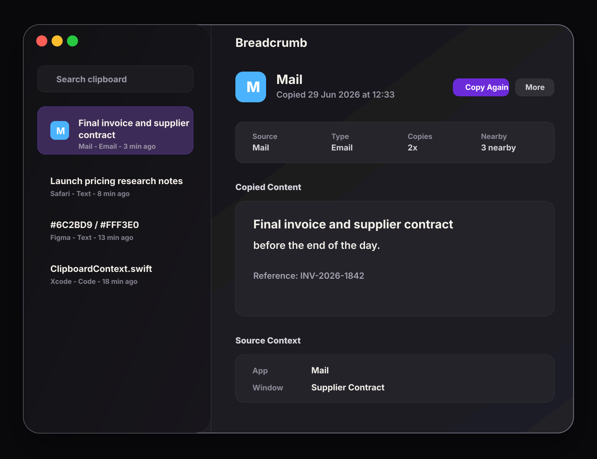

No account requirement
Breadcrumb's launch direction does not require a web account or cloud clipboard service to recover copied items.
Clipboard history can contain passwords, invoices, code, customer details, and private messages. Breadcrumb is designed so clipboard recovery starts local on your Mac, not in a cloud account.

Problem
A private clipboard manager still stores copied material. That means the product should avoid unnecessary accounts, sync, analytics, and hidden capture behavior. It should also make pausing and exclusions obvious.
Breadcrumb's launch direction does not require a web account or cloud clipboard service to recover copied items.
The product is focused on clipboard events. It does not record the screen, log keystrokes, or collect browser history.
Clipboard history and supported image payloads are designed to live locally on the Mac instead of being routed through external sync.
Controls
Clipboard capture can be paused when you know you are working with material that should not enter history.
Privacy rules can exclude source apps from future capture, which matters for password managers, finance tools, and sensitive work apps.
Breadcrumb is designed to avoid obvious password-manager and concealed pasteboard material, reducing accidental capture risk.
Users should be able to clear local history rather than relying on a cloud service to forget copied content.
Practical examples
Honest limits
Any clipboard history app has access to copied content while it is running. Breadcrumb's privacy position is about minimizing unnecessary data movement, avoiding broad monitoring, giving users controls, and being precise about what is captured.
Related guides
FAQ
Breadcrumb is designed as a local-first Mac clipboard manager with no cloud sync or account requirement in the launch promise. It still stores clipboard history locally, so users should manage capture intentionally.
No. Breadcrumb is focused on clipboard events. The launch promise does not include screen recording, keystroke logging, browser history capture, or cloud activity tracking.
Yes. Breadcrumb's privacy model includes app exclusions so users can prevent future capture from selected source apps.
Breadcrumb
Breadcrumb's launch scope is intentionally Mac-first and local-first because clipboard data deserves fewer moving parts.